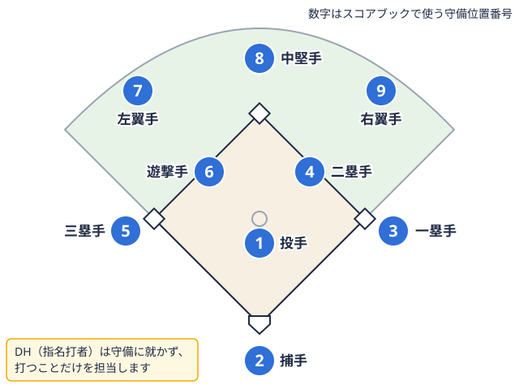

部員向けガイド 2026-11-13
野球の守備位置の適性と選び方｜大学野球部員が自分の向き不向きを見極める方法
大学野球では、高校時代のポジションをそのまま続ける部員もいれば、入部をきっかけに「自分はどこが向いているのか」と考え直す部員もいます。内野手が足りない、外野に空きがある、打撃を活かすために守備の負担が軽い位置へ移りたい。理由はさまざまですが、守備位置の適性には決まった正解がなく、体の特徴、得意なプレー、チームの事情が重なって決まっていきます。
この記事では、公開されているポジション別の見方を確認したうえで、大学野球部員が自分の向き不向きを確かめる手順を整理します。2026年から東京六大学で指名打者投手の代わりに打撃だけを行う選手で、守備には就かない。試合前に名前と打順を申告する。東京六大学は2026年から採用。 
守備位置は9つ：まず全体像を整理する
野球の守備位置は、投手、捕手、一塁手、二塁手、三塁手、遊撃手二塁と三塁の間あたりを守る選手。スコアブックでは、守備位置を表す番号「6」で書く。用語辞典で見る、左翼手、中堅手、右翼手の9つです。野球規則（MLBの公式規則5.02の英語版条文で確認した内容）では、投手と捕手には位置の決まりがあり、それ以外の野手はフェアグラウンド内であればどこに位置してもよいとされています。つまり、内野と外野の区分や「ショートは足が速い選手」といったイメージは、規則で決まっているものではなく、競技の中で積み重ねられてきた役割分担の慣習です。
役割の違いを、大まかに表にまとめます。
| 位置 | 主な役割 | 目立ちやすい要素 |
|---|---|---|
| 投手 | 試合の起点になる投球 | 制球、プレッシャーへの向き合い方 |
| 捕手 | 配球、全体への声かけ | 視野の広さ、責任感、送球 |
| 一塁手・三塁手 | 強い打球への対応、送球の受け手 | 体格、捕球の確実さ |
| 二塁手・遊撃手 | 内野の中心、連係の起点 | 機敏さ、足運び、送球 |
| 左翼手・右翼手 | 打球処理、三塁・本塁への送球 | 打球判断、右翼は肩が注目されやすい |
| 中堅手 | 外野の要、左右への声かけ | 守備範囲、判断力 |
表の「目立ちやすい要素」は、あくまで公開されている解説を整理した目安です。同じ位置でも、チームの戦い方や投手の傾向によって求められるものは変わります。
公開されているポジション別の適性の見方
スポーツ情報サイトSPAIAの2016年8月30日付のコラム「強い野球チームを作るための各ポジションの適性とは？」では、次のような見方が紹介されています。
- 投手：狙った場所に投げられる制球に加え、打たれる場面でも耐えられる精神面が挙げられています。
- 捕手：全員の表情を見渡せる位置で、チームをまとめる役割と、精神的な負担を引き受ける責任感が挙げられています。
- 二塁手・遊撃手：足の速さ、小回り、肩の強さ、状況に応じて動ける臨機応変さが挙げられています。
- 一塁手・三塁手：足の速さよりも、強い打球への対応や走者との接触に耐えられる体格が挙げられています。
- 右翼手：三塁までの距離が長いため、肩の強い選手が好まれるとされています。
- 左翼手：肩の強さは最低限あればよいとされています。
- 中堅手：外野の要として、左右の外野手に指示を出せる選手が向くとされています。
このコラムは少年野球の指導を想定した読みものであり、大学野球の競技レベルにそのまま当てはまるとは限りません。また、ここで挙がっている項目は選手の資質を断定するものではなく、「そうした選手が好まれる傾向がある」という整理として受け取るのが安全です。なお、硬式の大学野球選手をポジション別に体力測定で比較した査読付き論文は、今回の確認範囲では見つけられませんでした。数値で「このタイムなら遊撃手」と言い切れる根拠は、現時点では示せません。
向き不向きを見る4つの物差し
では、大学野球部員は何を手がかりに自分の適性を考えればよいのでしょうか。ここでは判断の材料を4つに分けます。
1. 守備の動き：反応・足運び・捕球から送球までの流れ
SPAIAのコラムは、内野手の適性を見る場面として、ゴロへの俊敏な反応、足運びやグラブさばきの的確さ、捕球から送球までの動作のスムーズさに触れています。ノックの中で、どの方向の打球が処理しやすいか、逆シングルとフォアハンドのどちらが安定するか、捕ってから投げるまでに迷いが出る場面はどこか、といった点を振り返ると、自分の傾向が見えやすくなります。
2. 送球：強さ・正確さ・距離
肩が強いことと、狙った場所へ投げられることは別の力です。遠投は得意でも、短い距離の送球が安定しない場合もあります。送球の課題は、フォームの改善で変わる余地があるため、送球フォームの改善を扱った記事もあわせて確認すると、位置の向き不向きとフォームの課題を切り分けやすくなります。
3. 打撃：その位置で期待される打撃との相性
守備の負担が大きい位置では、守備を優先して起用される場合があります。一方、打撃で評価されている選手は、守備の負担が軽い位置や、後述するDH枠で力を発揮する場面もあります。自分の打撃が長打型なのか、出塁型なのか、走塁を絡められるのかを、チーム内の役割と合わせて考えます。
4. チーム事情：空いている位置と層の厚さ
最後にチーム事情です。同じ実力でも、層の厚い位置ではレギュラー争いが難しく、層の薄い位置では出場機会が増える場合があります。自分の希望だけでなく、チームがどの位置を補強したいのかを知ることも、判断材料になります。
自分で確かめる：記録を取って振り返る手順
適性は、感覚だけで決めると思い込みが入りやすくなります。次の手順で記録を取ると、監督やコーチとの相談もしやすくなります。
- 練習メニューごとに、守った位置と処理した本数、エラーや悔しかった場面を簡単にメモする
- 週に一度、メモを見返して「得意な打球」「苦手な打球」を書き出す
- 練習試合では、守った位置ごとに、打球の傾向と自分の動きを振り返る
- 動画を撮れる環境なら、捕球から送球までの流れを他の位置の選手と見比べる
- 1か月ほど続けたうえで、「候補にしたい位置」を2つまで書き出す
候補を1つに絞り込みすぎないことがポイントです。どの位置も未経験のうちは、自分に合う・合わないは判断しきれません。複数の位置を経験しながら、少しずつ絞っていく進め方が現実的です。
監督・コーチに相談するときの伝え方
希望の位置を伝えるときは、「やりたい」だけで終わらせず、記録と理由を添えると、相手も判断しやすくなります。
- 現在守っている位置での課題と、その位置を続ける場合の見通し
- 候補にしたい位置と、その理由（記録や得意な動き）
- 練習で試す機会をもらえるかどうか
- チームとして空いている位置や、補強したい位置
相談の場面では、結論をすぐ求めず、「次の期間はこの位置も試させてください」というお願いの形にすると、受け入れてもらいやすくなります。ポジションの決定権は多くの場合、監督やコーチにあります。希望が通らない場合でも、別の位置で出場機会を得る選択肢があることを念頭に置いておくと、気持ちの余裕が生まれます。
2026年のDH制導入と守備位置の考え方
守備位置の適性を考えるうえで、近年は指名打者（DH）制の広がりも見逃せません。東京六大学野球連盟は2025年4月10日の理事会で、2026年のリーグ戦からDH制を導入すると発表しました。報道によると、全日本大学野球連盟に加盟する連盟でDH制を採用していなかったのは、東京六大学と関西学生のみでした。事務局長はMLBがすべてDH制であること、卒業後の進路である社会人野球企業やクラブチームなどが持つチームによる野球。日本野球連盟が、都市対抗野球大会などを主催している。用語辞典で見るが採用していることなどを理由に挙げています（日刊スポーツ、2025年4月11日）。
2026年4月の開幕に際しては、各校の監督が次のように話しています（日刊スポーツ、2026年4月11日）。
- 早稲田大の小宮山悟監督：守れない選手は使わない方針で、打つだけの選手を起用する予定はない。DH解除が早稲田はおそらく一番多くなる
- 法政大の大島公一監督：DH制は解除しない考えで、投手の継投先発投手から救援投手へ、投手を交代させながら試合を進めること。用語辞典で見るがしやすくなった
- 東京大の大久保裕監督：使えるものは何でも利用する考えで、打撃に特化した選手を使う好機と捉えている
- 慶應義塾大の堀井哲也監督：DH選手の打撃面やメンタル、「打って当然」というプレッシャーを懸念している
このように、DH制への向き合い方は大学ごとに異なります。打撃に自信のある部員にとってはDHが新しい選択肢になる一方、監督によっては守備力を重視する方針もあります。「守れなくても打てればよい」と考えるのではなく、守備位置の適性を磨いておくことが、結果的に出場機会を広げる場合もあります。なお、東京六大学以外のリーグでの運用は、所属リーグの規定と各チームの方針を確認してください。
一次データで確認する：リーグ戦の成績ページ
自分の位置の参考になる選手を探すときは、実際のリーグ戦の成績が役立ちます。ベースボールマニアでは、リーグごとの順位表やチーム一覧を公開しています。
- 東京六大学 2026年秋季 打撃・投手成績：各校の主力選手の成績を確認できます
- 東京六大学 2026年秋季 順位表：チームの戦い方や得点力の傾向を見る手がかりになります
- 東都大学1部 2026年秋季 順位表：東都1部の勝敗状況を確認できます
- 東京六大学 2026年秋季 チーム一覧：各校のページへ進んで試合結果を確認できます
成績のページからは、どの位置を誰が守っているかまでは分からない場合があります。チームの公式サイトやメンバー表と組み合わせて、「自分と似たタイプの選手がどの位置で起用されているか」を調べると、判断材料が増えます。
位置が決まった後にやっておきたいこと
守備位置の方向性が見えてきたら、用具や体のケアも合わせて整えます。位置によって、グラブやスパイクに求められるものが変わる場合があります。グラブの選び方やスパイクの選び方の記事で、位置との関係を確認してください。また、送球の多い位置では肩やひじへの負担が増えやすいため、野球肩・野球肘の予防も意識しておくと安心です。
まとめ
- 守備位置の適性に決まった正解はなく、守備の動き、送球、打撃、チーム事情の組み合わせで考えていく
- 公開されているポジション別の見方は目安であり、断定せずに自分の記録で確かめる
- 記録を取り、候補を2つ程度に絞って、監督やコーチに相談する
- 2026年からは東京六大学でもDH制が始まり、打撃の強みの活かし方に新しい選択肢が加わった。ただし、監督によっては守備力を重視する方針もある
向き不向きは、一度決めたら変えられないものではありません。複数の位置を試しながら、自分とチームにとって最も力を発揮できる場所を探していってください。
出典一覧
- SPAIA「強い野球チームを作るための各ポジションの適性とは？」（2016年8月30日）：https://spaia.jp/column/baseball/642
- 日刊スポーツ「東京六大学野球が26年DH制導入 早大・小宮山監督「高校生の勧誘にはメリット」 ビデオ検証は今春から導入」（2025年4月11日）：https://www.daily.co.jp/baseball/2025/04/11/0018856670.shtml
- 日刊スポーツ「リーグ戦開幕へ早大・小宮山監督「DH解除多くなる」 各監督ら前日に意気込み」（2026年4月11日）：https://www.daily.co.jp/baseball/2026/04/11/0020230431.shtml
- Official Baseball Rules 5.02 Fielding Positions（MLB規則の英語版条文）：https://baseballrulesacademy.com/official-rule/mlb/5-02-4-03-fielding-positions/
この部活・競技を応援したい方へ
協賛・応援はこちらから。
取材してほしい部活を募集中
あなたの部活・チームを取材してほしい方はこちらから。
オフシーズン・引退後に、長期インターンという選択
部活で培った力を実務で試す。16タイプ診断（30秒）で合う企業がわかります。